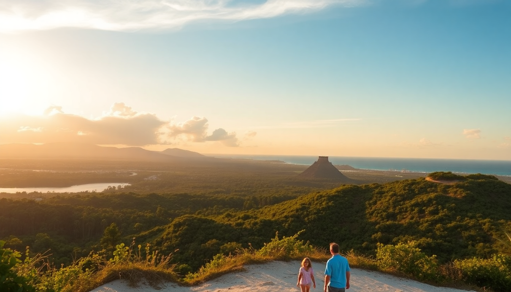

7 Day Mexico Itinerary: Cancun, Tulum & Chichen Itza

I landed in Cancun with no plan beyond "see some ruins, eat tacos, find a cenote." Seven days later, I had a clear picture of what works and what doesn't on a Yucatán loop. This itinerary skips the filler and focuses on the three anchors: Cancun for beach recovery, Tulum for ruins and cenotes, and Chichen Itza for the bucket list. You can drive it, bus it, or mix both.
How should you split your days between Cancun, Tulum, and Chichen Itza?
We started with 3 nights in Cancun (Hotel Zone), then 3 nights in Tulum (pueblo, not beachfront), and used the middle day to hit Chichen Itza on the way between them. That split gives you time to relax, explore, and not feel like you're in a moving van.
- Cancun (3 nights): Focus on the Hotel Zone for beaches and nightlife. We stayed at Hotel NYX Cancun — solid mid-range, decent pool, easy walk to the beach.
- Tulum (3 nights): Skip the beach road hotels unless you have cash to burn. We booked Hotel Posada Margherita in Tulum Pueblo. Quieter, cheaper, and a 5-minute taxi to the ruins.
- Chichen Itza (day trip): It sits roughly halfway between Cancun and Tulum. We left Cancun at 6 AM, toured the site by 9, and checked into Tulum by 2 PM.
What is the best way to get from Cancun to Tulum with a stop at Chichen Itza?
Renting a car is the most flexible option. We picked up from Hertz at Cancun Airport and dropped it at the Tulum office. The drive is straight down Highway 307. For Chichen Itza, take the toll road (180D) — it costs about 600 pesos but saves an hour versus the free road.
- Drive time Cancun to Chichen Itza: 2.5 hours via toll road.
- Drive time Chichen Itza to Tulum: 2 hours via free road (307 south).
- Bus option: ADO runs direct buses from Cancun to Chichen Itza, then you'd need a second bus to Tulum. It works but eats a full day.
- Tour option: We skipped tours because they force you to visit a "handicraft market" for 45 minutes. Waste of time.
Which cenotes near Tulum are worth the hype?
We visited three. One was incredible, one was fine, one was a tourist trap with busloads of people. The key is going early.
- Cenote Calavera: Also called "Temple of Doom." Small, deep, with a hole in the roof you can jump through. Arrived at 8 AM — just us and two other people. 150 pesos entry.
- Cenote Dos Ojos: Huge, clear, great for snorkeling. More crowded by 10 AM. Bring a waterproof flashlight — the cave sections are dark. 350 pesos.
- Gran Cenote: Skip it. Overpriced (500 pesos), packed with tour groups by 9 AM, and the water felt colder than the others. Not worth the Instagram hype.
- Cenote Taak Bi Ha (near Coba): Our local host recommended this one. 100 pesos, almost empty, and you can swing on a rope into the water. Best find of the trip.
Is the Tulum Ruins site actually worth seeing?
Yes, but manage your expectations. The ruins themselves are small compared to Chichen Itza. What makes Tulum special is the cliffside setting — you're looking at crumbling Mayan structures with the Caribbean Sea as a backdrop. We got there at 8 AM (opens at 8) and had the front row mostly to ourselves.
- Entry fee: 90 pesos for the site, plus 50 pesos for the parking lot if you drive.
- Time needed: 1.5 hours max. It's a compact site.
- What to skip: The beach below the ruins. It's rocky and crowded. Better to swim at Playa Paraiso (public beach, 10 minutes north).
- Pro tip: Bring a hat and water. There's almost no shade on the ruins path.
What should you eat in Tulum and Cancun that isn't a tourist trap?
We avoided the beachfront restaurants in both cities — they charge triple for the same food. Instead, we ate where locals eat.
- Tulum: Taqueria Honorio (calle 6 between avenidas 5 and 10). Best al pastor tacos I've had. 25 pesos each. Cash only.
- Tulum: Burrito Amor (calle Osiris). Big, messy burritos with fresh salsas. Vegetarian-friendly. Expect a 15-minute wait.
- Cancun Hotel Zone: El Fish Fritanga (Boulevard Kukulcan, km 9.5). Fried fish and ceviche at reasonable prices. Skip the shrimp cocktail — it's watery.
- Cancun downtown: Mercado 28 (market). We grabbed tortas and aguas frescas from a stall called Tortas El Famoso. 60 pesos for a sandwich bigger than my head.
How do you beat the crowds at Chichen Itza?
Arrive before 8 AM. The gates open at 8, but buses start rolling in around 9:30. We were inside by 8:15 and had the main pyramid almost to ourselves for 20 minutes. By 10 AM, it was shoulder-to-shoulder.
- Ticket: 614 pesos for foreigners (includes the site and the mandatory guide fee). Buy online at the official INAH site to skip the ticket line.
- Guide: You're required to hire one at the entrance. We paid 800 pesos for a 90-minute tour. Ours was knowledgeable but rushed us through the ball court.
- What to skip: The sound-and-light show at night. It's in Spanish only and the speakers are terrible.
- What not to skip: The Temple of the Warriors and the Group of a Thousand Columns — most tourists walk right past them to get a selfie with the pyramid.
- Parking: 100 pesos for the official lot. Ignore the guys waving you into "cheaper" lots on the side of the road — they're scams.
FAQ
Is it safe to drive between Cancun, Tulum, and Chichen Itza? Yes. The main highways (307 and 180D) are well-maintained and have regular police patrols. We never felt unsafe. Just avoid driving after dark — livestock and unlit bicycles are common. Keep your doors locked at toll booths; we had a guy try to sell us trinkets through the window.
Do I need pesos or can I use credit cards everywhere? Bring pesos for small purchases — tacos, cenote entry, market stalls. Most hotels, nicer restaurants, and gas stations accept cards. ATMs in Cancun's Hotel Zone give good rates. Avoid the ATMs at Chichen Itza; the fees are ridiculous (we got charged 80 pesos on a 500-peso withdrawal).
Can you do this itinerary without a car? Yes, but it's less convenient. Use ADO buses between Cancun, Tulum, and Chichen Itza. For cenotes and ruins in Tulum, rent a bike (many hotels rent them for 200 pesos/day) or use colectivos (shared vans) that run along Highway 307. From Tulum Pueblo, it's a 20-minute bike ride to the ruins.
Conclusion
- Split 3 nights in Cancun, 3 in Tulum — use the travel day to hit Chichen Itza on the way.
- Rent a car for flexibility, or use ADO buses + bikes for a budget option.
- Hit Chichen Itza at 8 AM — you'll get 30 minutes of empty site before the crowds.
- Eat at local taquerias and markets, not beachfront restaurants — better food, half the price.
- Skip Gran Cenote and night shows; go to Cenote Calavera or Taak Bi Ha instead.